I am a student in the Department of Mechanical and Aerospace Engineering
at Cornell University. I am interested in robotics. This webpage contains all of the lab
reports for MAE 5190 Fast Robots.
Lab 3: TOF
The objective of the lab is to connect the time of flight (TOF) sensors to the Artemis board.
Prelab
The prelab involved reading about the ToF sensor used in the lab. The lab materials include:
From the datasheet it was found that the I2C sensor address for the ToF sensor is 0x52.
The two ToF sensors have the same address and one of the addresses will need to be changed
in order to receive data from both sensors at the same time.
Task 2: Approach To Using Two ToF Sensors
To use two ToF sensors, the XSHUT pin will be used to connect one of the ToF sensors to pin
8 on the Artemis board. The XSHUT pin will be set to LOW and then the I2C sensor address
will be changed for the other ToF sensor that is on. After the I2C address has been changed
the XSHUT pin will be set to HIGH, turning the other TOF sensor back on. This will allow for
both ToF sensors to be used in parallel.
Task 3: Placement Of Sensors On Robot
The placement of the two ToF sensors on the robot will impact the field of vision. Two
long QWIIC connectors will be used to attach the ToF sensors. Longer connectors will allow
me to position the ToF sensors in more potential ways compared to shorter wires. The
potential arrangements of the sensors include (1) a sensor on the front and left side,
(2) a sensor on the front and right side, (3) two sensors positioned on either side of
the front of the robot, and (4) a sensor on the front and the back. Depending on the task
at hand any of these sensor positions may be effective.
If there is no sensor on the back of the robot there might be an issue if the robot needs
to back up or move in reverse. If there is no sensor on the side then the robot might miss
an obstacle that is located in a blind spot.
Task 4: Sketch Of Wiring Diagram
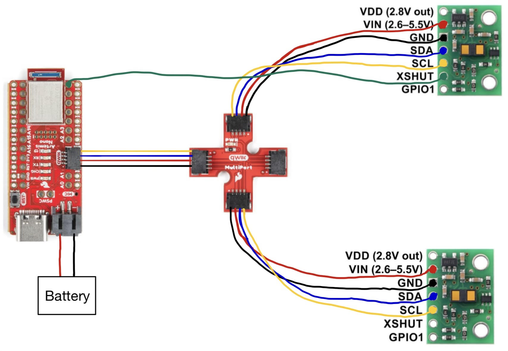
Lab Tasks
Task 1: ToF Sensor Connected To QWIIC Breakout Board
The Artemis board was powered using a battery:
ToF sensors connected to the QWIIC breakout board:
Task 2: Artemis Scanning For I2C Device
The SparkFun VL53L1X 4m Laser Distance Sensor Library was installed on Arduino IDE.
The code to find the I2C address: File->Examples->Apollo3->Wire->Example05_Wire_I2C.ino
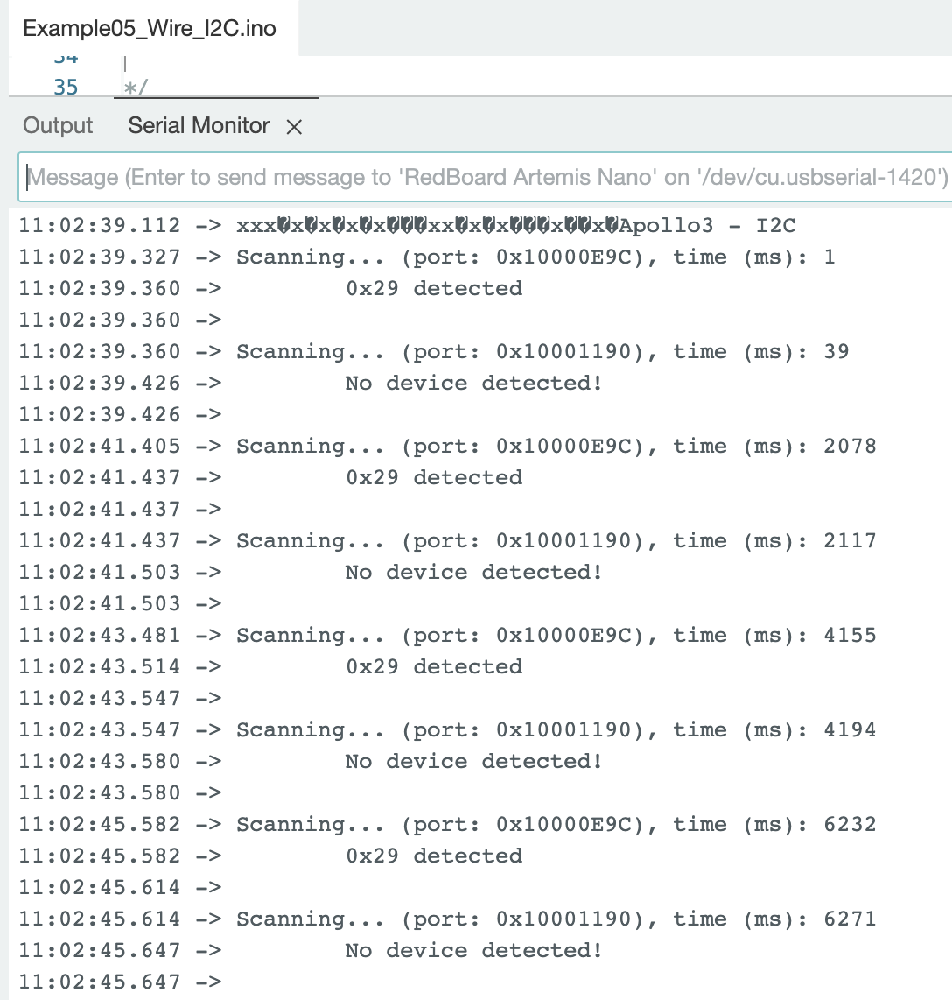
One ToF sensor was connected during the scan. The sensor had an I2C address of 0x29.
In the datasheet for the ToF sensor, the listed I2C address is 0x52. The
Example05_Wire_I2C.ino code returned an address of 0x29. This is a result of the
binary for address 0x52 (binary: 0b01010010) being shifted to the right, resulting in
an address of 0x29 (binary: 0b00101001). The rightmost bit is ignored because the bit
identifies if data is read/write.
Task 3: Sensor Data With Chosen Mode
Sensor Mode Discussion
The ToF sensor has two modes: (.setDistanceModeMedium(); //3m has been removed)
.setDistanceModeShort(); //1.3m
.setDistanceModeLong(); //4m
Information from the datasheet shows
that the short mode can only reach up to 1.3m and is the most resistant to ambient
light. The long mode can reach up to 4m but is very sensitive to ambient light, which
decreases the distance to 0.73m. The timing budget range for the short mode is 20ms -
1000ms. The timing range for the long mode is 33ms - 1000ms. Short mode has greater
accuracy and less sensor noise compared to the long mode. While it would be beneficial
for a robot that needs to sense objects farther away to use the long mode, for this lab
I am prioritizing accuracy and choose to test the short mode.
Testing .setDistanceModeShort();
The ToF sensor was first tested using the
File->Examples->SparkFun_VL53L1X_4m_Laser_Distance_Sensor->Example1_ReadDistance.ino
This code was modified to include the line
distanceSensor.setDistanceModeShort(); in the setup to choose the short mode for the
ToF sensor.
ToF Sensor Setup:
Arudino code to find the ToF distance:
Sensor Range:
In the datasheet it is stated that the short mode for the ToF sensor has a range up to 1.3m.
To test the range of the sensor I took an initial measurement at 100mm and continued to take
measurements up to 1900mm. The graph below shows the actual distance of the ToF sensor from
the wall vs the ToF sensor distance.
The plotted measured distance value is the mean value of the ten collected data
points. From the graph below it can be seen that after 1.3m the measured values start to
differ more from the actual values compared to measured values less than 1.3m.
Accuracy:
The difference in the measured and actual distances was plotted against the actual distances the
ToF sensor was from the wall. When the ToF sensor is less than 1.3m from the wall, the difference
is between 18mm and 40mm. After 1.3m the difference in the measured vs actual distance increases.
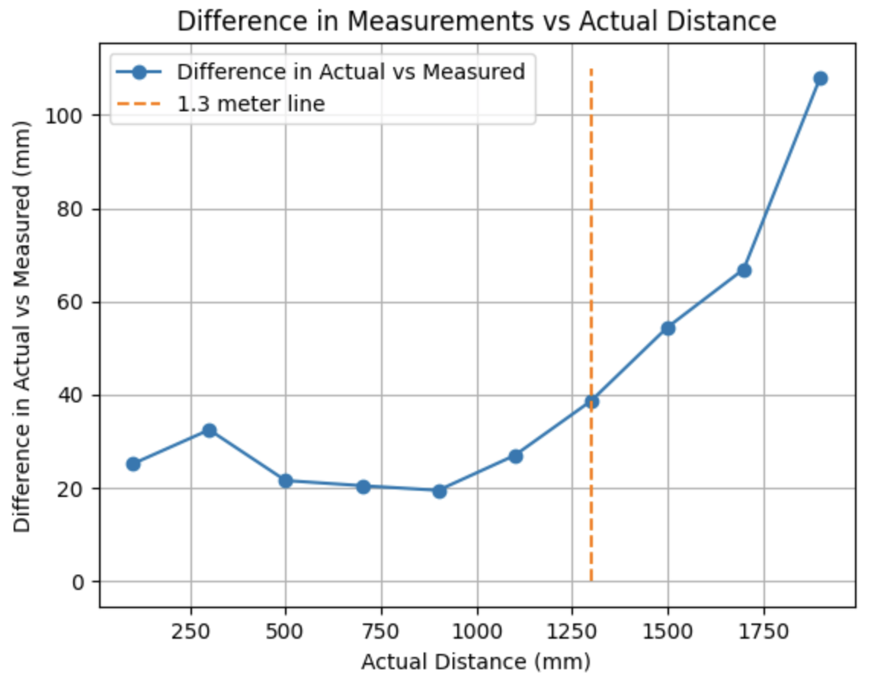
Repeatability:
The standard deviation vs actual distance graph is shown below. The standard deviation is below 3mm
for measurements under 1.3m. After 1.3m the standard deviation starts to vary and the standard
deviation at 1900mm is 8.75mm.
Below are the time and measured distance arrays:
100mm: 9 measurements at 75mm, 1 measurement at 74mm
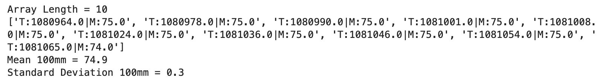
300mm: 6 measurements at 268mm, 4 measurements at 267mm
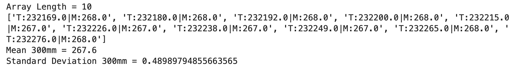
500mm: 5 measurements at 478mm, 5 measurements at 479mm
700mm: 5 measurements at 679mm, 4 measurements at 681mm, 1 measurement at 677mm
900mm: 4 measurements at 882mm, 5 measurements at 879mm, 1 measurement at 883mm
1100mm: 5 measurements at 1076mm, 4 measurements at 1070mm, 1 measurement at 1071mm
1300mm: 4 measurements at 1258mm, 4 measurements at 1263mm, 2 measurements at 1265mm
1500mm: 3 measurements at 1448mm, 2 measurements at 1447mm, 3 measurements at 1440mm, 2 measurements at 1449mm
1700mm: 2 measurements at 1634mm, 3 measurements at 1631mm, 3 measurements at 1632mm, 2 measurements at 1637mm
1900mm: 3 measurements at 1782mm, 2 measurements at 1791mm, 4 measurements at 1802mm, 1 measurement at 1784mm
Ranging Time:
The ranging time is the time between each sensor measurement. I commented out all print
statements, except the calculated value between the start and end times to allow for
code to run as fast as possible. The ranging time was found to be around 55ms.
Task 4: Two ToF Sensors: Working In Parallel
Two ToF Sensors were connected to the Artemis board and Arduino code needed to be
written for the two ToF sensors to work in parallel. The code below is written
according to the prelab procedure.
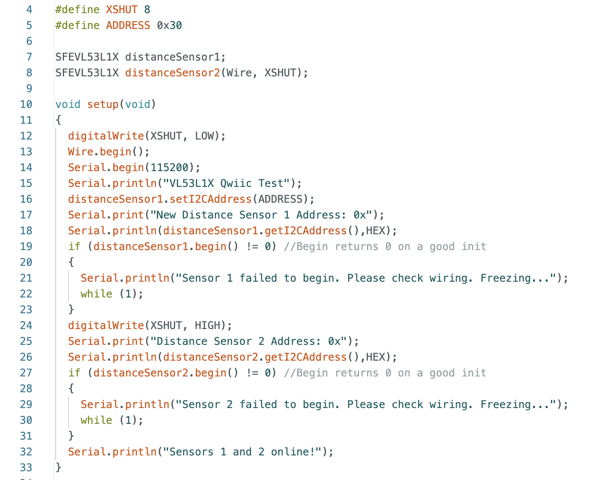
The Serial Monitor prints the I2C addresses for both distance sensors to confirm
that one of the addresses was changed to 0x30 and the other remains 0x52.
Task 5: ToF Sensor Speed: Speed And Limiting Factor
The code to find the ToF sensor speed can be found below. Time is continuously printed
and distance measurements are only printed when a measurement is available.
When the
sensors are not collecting data the loop takes around 2ms. When data is being collected
the loop takes around 11ms. The longer loop time when collecting ToF sensor data is
the limiting factor. The limiting factor is the time needed to record distance
measurements.
Task 6: Time vs Distance: Data From Two ToF Sensors Over Bluetooth
The code from Lab 2 was modified to send time stamped ToF sensor data to Jupyter
Notebook. The data for the two ToF sensors was plotted against the recorded time. The
case I created in Arduino can be found below.
5000 Level Task 1: Discuss Different Distance Infrared Sensors
Active and Passive Infrared Sensors
The two main types of infrared sensors are active and passive infrared sensors. Passive
infrared sensors sense nearby emitted infrared light, using a difference in signals
between two pyroelectric sensors. These sensors are often used for security
purposes to detect if there is a heat energy change in the environment, but cannot
determine the distance to an object.
Active infrared sensors use an emitter and receiver to determine the distance
to an object.
If there is an obstruction, the active infrared sensor knows that there is an object
in between the emitter and receiver. Active infrared sensors are used in industry
conveyor belts, as well as in garage door safety mechanisms.
(Source: Arrow Electronics)
Different types of infrared sensors include proximity sensors, ToF sensors, and triangulation sensors.
(Source: NYU)
5000 Level Task 2: ToF Response To Different Colors And Textures
Four colors and three textures were tested at a distance of 500mm. Colors include pink,
blue, yellow, and red. Textures include a hand towel, rug, and folder. The control
surface was the dark grey wall that I used throughout the lab for distance readings.
The change in color or texture did not affect the ToF sensor's distance output that
remained around 478mm.
Control:
Color Pink:
Color Blue:
Color Yellow:
Color Red:
Texture Hand Towel:
Texture Rug:
Texture Folder:
Lab 3 References
Thank you to all of the TAs that answered my questions. I referenced the past lab reports of
Liam Kain, Rafael Gottlieb, Larry Lu, Julian Prieto, and Ignacio Romo.
Lab 2: IMU
The objective of the lab is to connect the IMU to the Artemis board and record the robot
performing a stunt.
Prelab
The prelab involved reading about the IMU used in the lab. The lab materials include:
The SparkFun 9DOF IMU Breakout - ICM 20948 - Arduino Library was installed.
Artemis IMU Connections
The setup for this lab is shown in the image below.
IMU Example Code and AD0_VAL
The example code found under
SparkFun 9DOF IMU Breakout - ICM 20948 - Arduino Library->Arduino->Example1_Basics
was run to test if the IMU was working correctly.
Upon opening the Example1_Basics code, the AD0_VAL default was set to one. When the ADR
jumper is closed the value should be set to zero. AD0_VAL corresponds to the last bit
of the I2C address. My ADR jumer on the IMU was closed. For this reason, I needed to
change the AD0_VAL to zero to return the accelerometer, gyroscope, magnetometer, and
temperature data.
While viewing the output data
in the serial monitor, I moved the IMU to change the accelerometer and gyroscope data. I
looked at the notated axis that was printed on the IMU and moved the IMU along the X,
Y, and Z axis. I noticed that the respective X, Y, and Z serial monitor outputs for the
accelerometer increased
when I moved the IMU along the respective positive axis. The gyroscope data for pitch, roll,
and yaw also changed when I rotated the IMU around the X, Y, and Z axis.
Adding A Slow Blink
In the Example1_Basics code, I added a slow blink at the beginning of void setup() to
turn the Artemis LED on and off three times.
Task 2: Accelerometer
Accelerometer Equations
The following equations for pitch (theta) and roll (phi) were found in the FastRobots-4-IMU
Lecture Presentation.
Accelerometer Pitch and Roll at -90, 0, and 90 degrees
These equations were used to compute pitch and roll for the accelerometer. I implemented the
calculations in the Example1_Basics
sketch (lines 247 - 255 below) that was used in the previous task to receive continuous data
from the Artemis board and plot the results.
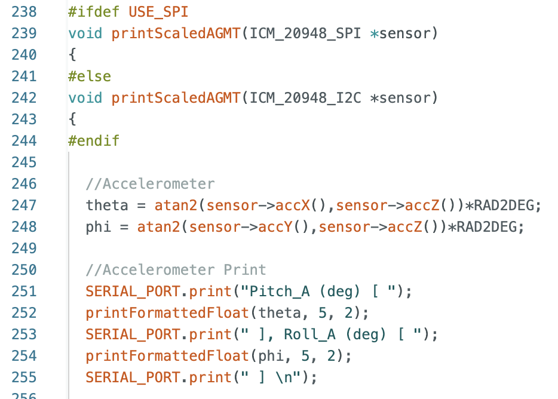
The below graphs show Pitch (data 0, green) and Roll (data 1, purple) at 0 degrees. The x-axis
is time (sec) and the y-axis is degrees.
Pitch and Roll at 0 degrees:
The below graphs show Pitch (data 0, green) at -90 and 90 degrees and the corresponding Roll
(data 1, purple) outputs. The x-axis is time (sec) and the y-axis is degrees. From the graphs
it can be seen that when pitch is at -90 degrees there is noise in the roll outputs.
Pitch at -90 degrees:
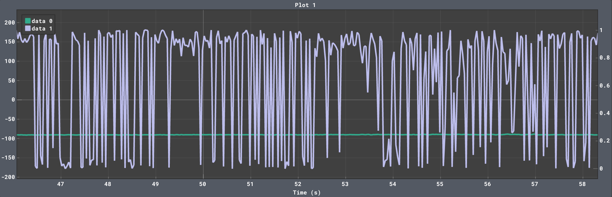
Pitch at 90 degrees:
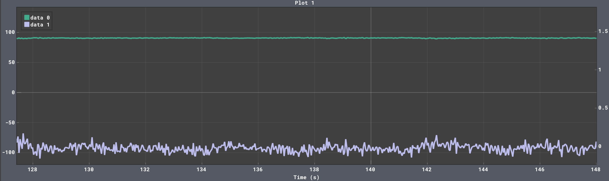
The below graphs show Roll (data 1, purple) at -90 and 90 degrees and the corresponding Pitch
(data 0, green) outputs. The x-axis is time (sec) and the y-axis is degrees.
Roll at -90 degrees:
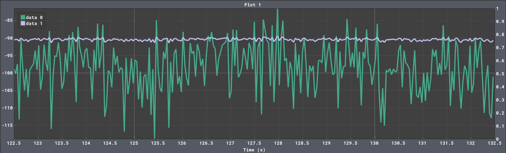
Roll at 90 degrees:
Accuracy Analysis
I plotted the data for pitch and roll at 0, 90, and -90 degrees in Jupyter Notebook and calculated
the mean and standard deviation.
Below are graphs. I also included a black line at 0, 90, or -90 degrees for reference.
Note: The data for the graphs was collected by holding the IMU against the table using my hand.
This may have resulted in some error due to the surface level or any small hand movements. In the
future the IMU should be calibrated when it is secured to the robot to achieve the most accurate
pitch and roll data.
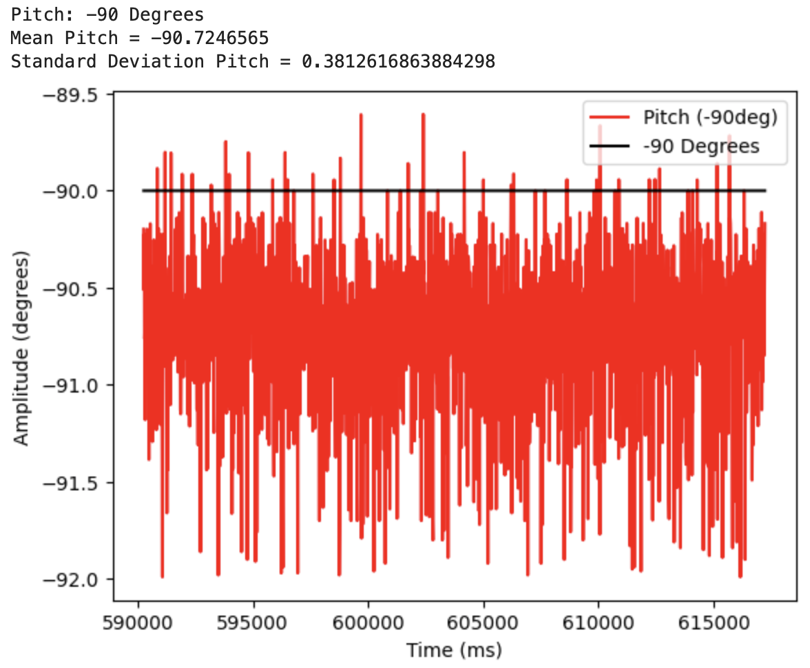
Fast Fourier Transform (FFT) Graphs
The noise in the accelerometer was examined using a Fast Fourier Transform. Data for the FFT was
collected as I moved the IMU. The sinusoid and the FFT graphs can be found below. There is a large
spike closer to 0Hz and less noise as the frequency increases.
Note: I modified the code from Stephan Wagner's Ed Discussion post to plot the FFT graphs.
Low Pass Filter FFT Graphs
From observing the above graphs, I choose a cutoff frequency of 25Hz to use for a low pass filter.
Using the determined cutoff frequency, I calculated the alpha used in the low pass filter. The
equations from lecture are below:
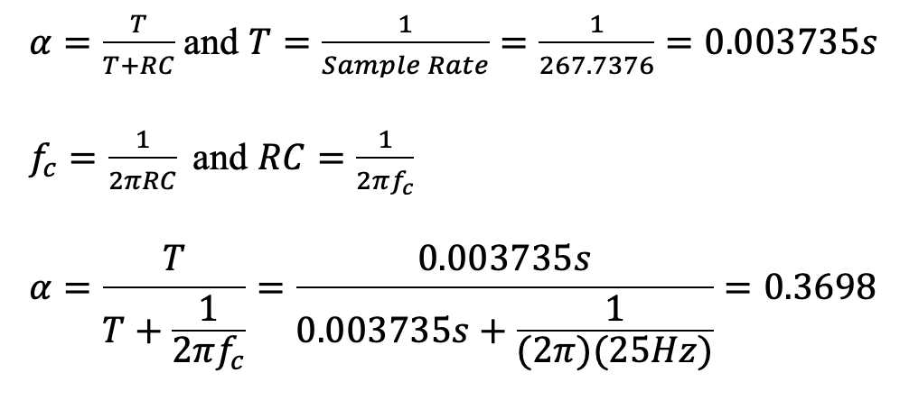
The low pass filter alpha was calculated to be 0.3698
The low pass filter was implemented in Arduino. The code to find pitch and roll for the accelerometer
can be found below.
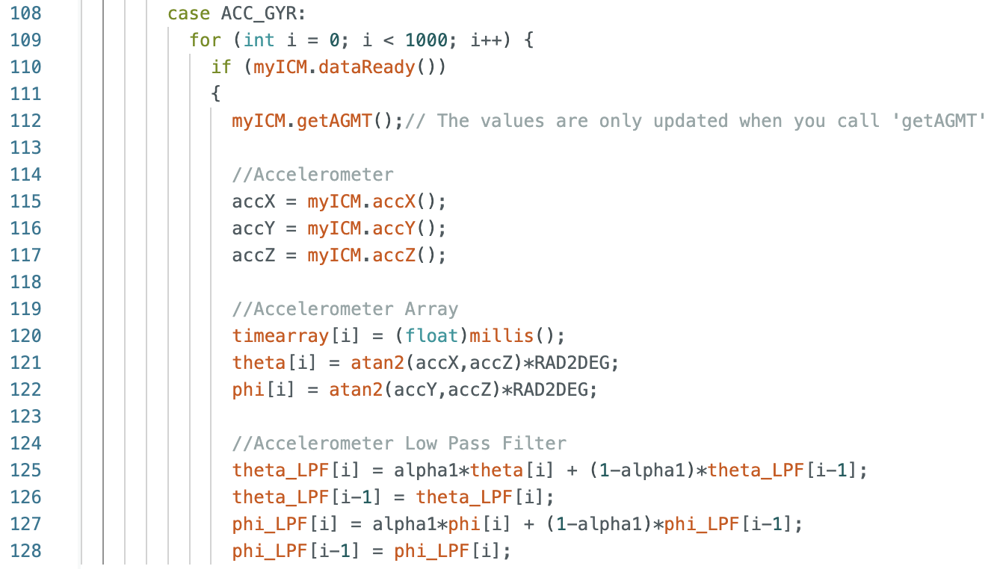
The below FFT graphs show the original signal (red) and the reduction in noise after implementing a
low pass filter (blue). Choosing a lower cut off frequency reduces more noise.
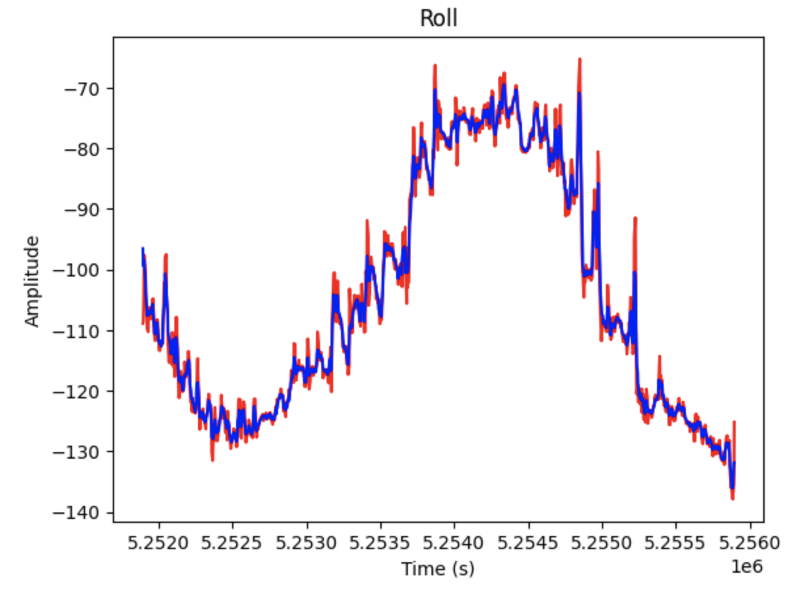
Prior to implementing a low pass filter, there was not a significant level of noise in the IMU data
due to a pre-existing internal low pass filter. The information for this can be found on page 10 of
the datasheet
for the IMU.
Task 3: Gyroscope
Gyroscope Equations
The following equations for pitch, roll, and yaw were found in the FastRobots-4-IMU Lecture Presentation.
The gyroscope measures angular velocity. To find pitch, roll, and yaw the data collected from the IMU
needs to be multiplied by a time step (dt in the below code).
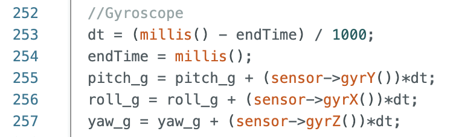
Gyroscope vs. Accelerometer Outputs
The code above was added to Example1_Basics and plotted alongside the data for the accelerometer's pitch
and roll. The gyroscope data drifts over time, but has less noise then the accelerometer data. In the
below graphs the IMU was moved slightly to achieve different outputs.
Pitch for Gyroscope (Blue) and Accelerometer (Orange):
Roll for Gyroscope (Blue) and Accelerometer (Teal):
The drift for the gyroscope can be better seen in the below graphs. The gyroscope was held in the same
position as the data was collected. As time increases the measurements drift away from the starting value.
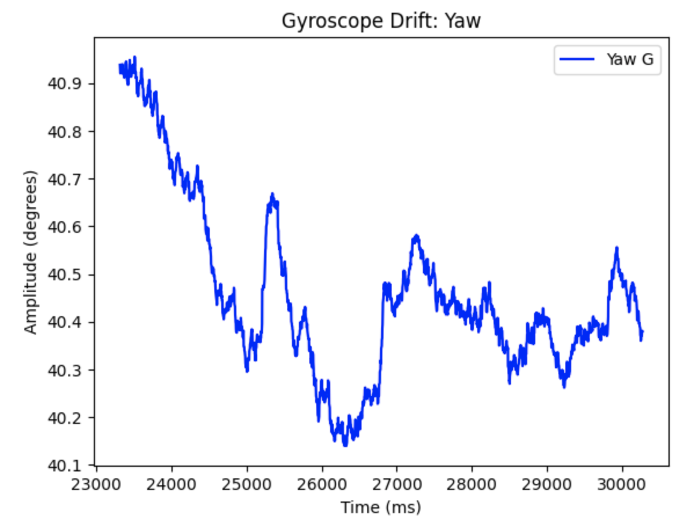
Code to plot the above graphs:
Adjusting The Sampling Frequency
Decreasing the sampling frequency resulted in a slower update to the angle measurements and more variation
in the outputs between each successive measurement. The sample rate should be high to achieve the greatest
level of accuracy when recording data.
Complimentary Filter
Complimentary filter equation from lecture:
The complimentary filter shows resistance to small vibrations as the IMU is moved during data collection. The
complimentary filter reduces noise compared to the accelerometer output. Alpha is a set constant that represents
how well the accelerometer output measures the correct pitch and roll data. I examined how different alpha values
affected the graphs. In the below graphs alpha = 0.5
Pitch for Gyroscope (Blue), Gyroscope Complimentary Filter (Orange), and Accelerometer (Teal):
Roll for Gyroscope (Blue), Gyroscope Complimentary Filter (Orange), and Accelerometer (Teal):
Pitch for Gyroscope, Gyroscope Complimentary Filter, and Accelerometer (alpha = 0.5):
Roll for Gyroscope, Gyroscope Complimentary Filter, and Accelerometer (alpha = 0.5):
Additional graphs when alpha = 0.2
Code to plot the above graphs:
Task 4: Sample Data
Speed Of Sampling
All of the accelerometer and gyroscope data print statements and any delays in the ble_arduino.ino file were removed
in order to speed up the execution of the main loop. A case called "ACC_GYR" was created that checked if the data was
ready in the main loop, and if there was data available stored it in arrays. After speeding up the loop I found that
new values were sampled every 0.04s, which is a sampling frequency of 1/0.04s = 25Hz.
Collect And Store Time Stamped IMU Data In Arrays
The data is stored in arrays on the Artemis board before being sent to Jupyter Notebook. There are 7 arrays including
time (1); accelerometer: x (2), y (3), z (4); gyroscope: x (5), y (6), z (7). I choose to use separate arrays because
in the future I can decide what data I want to send to Jupyter Notebook. The data type used to store the data is a float.
I choose to use a float as it is less bytes then a double, allowing for more data to be stored on the memory of the
Artemis. A float is 4 bytes, resulting in one packet of data information for the 7 arrays to be 28 bytes. The Artemis has
384kB of RAM. Sampling at 0.04s (25Hz) will result in data being collected for 548 seconds.
Code to find X, Y, and Z for Accelerometer and Gyroscope.
Code to find pitch and roll for Accelerometer; and pitch, pitch compliment, roll, roll compliment, and yaw for Gyroscope.
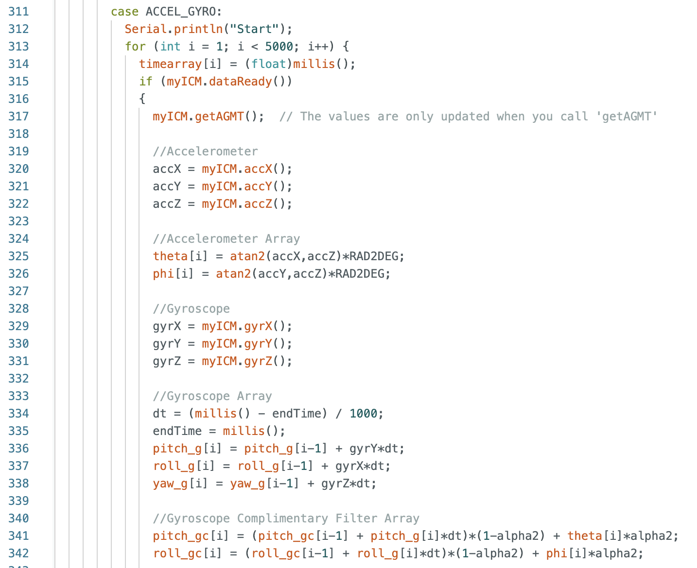
At Least 5 Seconds of IMU Data Sent Over Bluetooth
I collected data for the X,Y,Z positions of the accelerometer and gyroscope as well as the pitch and roll for the
accelerometer; and pitch, roll, and yaw for the gyroscope.
Task 5: Stunt Recording
The robot is moved using the controller. The robot can move very quickly, but it is hard to
control the speed. If the robot changes directions too quickly there is a chance that it
might flip over. It is also hard to slow down the robot to a stop. When slowing down the
robot, the reverse needs to be applied. This is easy to over compensate and the robot might
end up traveling in reverse rather than coming to a stop.
Lab 2 References
Thank you to all of the TAs that answered my questions. I referenced the past lab reports of
Liam Kain, Rafael Gottlieb, Larry Lu, Julian Prieto, and Ignacio Romo.
Lab 1: The Artemis Board and Bluetooth
Part 1
Test the connection between the Artemis board and the computer. Arduino IDE was installed and
a number of tasks were completed to show the functionality of the Artemis board.
The instructions for
Arduino Installation
were followed to ensure proper connection between the Artemis board and the computer.
The SparkFun Apollo3 Boards package was installed using the Boards Manager in Arduino
IDE (shown below).
The first task involved a blinking LED on the Artemis board. Example code:
File->Examples->01.Basics->Blink. A loop was implemented and used the function
digitalWrite() to turn on the LED for one second and then turn off the LED for one
second (shown below).
Task 3: Example04_Serial
In this example serial communication between the Artemis board and the computer was tested.
Example code: File->Examples->Apollo3->Example04_Serial.
Below is an image and video of the Serial Monitor showing the outputs: "Hello",
"This is the serial example", "Test 1", "Test 2", and "Test 3".
Task 4: Example02_AnalogRead
The temperature sensor of the Artemis board was tested. Example code:
File->Examples->Apollo3->Example02_AnalogRead. I covered the sensor with my hand to increase
the temperature reading. At the beginning of the test the temperature is around 32.3 degrees
Celsius and reaches a temperature of around 33.4 degrees Celsius (shown below).
Another example shows various temperatures being plotted using Better Serial Plotter.
Task 5: Example1_MicrophoneOutput
The Microphone Output task tests the microphone of the Artemis board. Example code:
File->Examples->PDM->Example1_MicrophoneOutput. During this task I spoke into the
microphone to change the frequency (image and video shown below).
5000 Level Task 1: LED and Musical A4
The Artemis board was programmed to turn on the LED when the musical note A4 is played
on a speaker (code below). I started with the Example01_MicrophoneOutput sketch,
and I added if statements (lines 113-122 below). The note A4 is 440Hz
(UC Berkeley Reference).
The first if statement determines if the frequency is between 430Hz and 450Hz to account
for any slight error in sound quality. If the frequency is within range an A4 statement
will be displayed in the Serial Monitor and the LED on the Artemis board will turn on.
The second if statement determines if the frequency is lower than 430Hz or greater than
450Hz. If the frequency is lower than 430Hz or greater than 450Hz a Not A4 statement
will be displayed in the Serial Monitor and the LED on the Artemis board will turn off.
Image of the outputs in the serial monitor:
Video showing the LED turning on when the note A4 is played:
I added to the LED and Musical A4 task by creating a musical tuner. There are eleven total
if statements that determine the note being played (lines 113-168 below):
I tested the connection between the Artemis board and the computer. Tasks performed included
turning on and off an Artemis board LED, printing serial monitor outputs, viewing temperature
data in the serial monitor, testing the microphone, and creating a musical tuner.
Part 2
Tested the Bluetooth communication between the computer and the Artemis board. Python in a
Jupyter Notebook was used for the computer and Arduino IDE was used for the Artemis board.
Prelab: Setup
During the setup for the lab I already had installed Python 3. I needed to install pip by
running the line "python3 -m pip install --user virtualenv" in the Command Line Interface
(CLI). I created a folder called MAE 5190 Lab where I put all of the Jupyter Notebook files.
I then created a virtual environment by typing "python3 -m venv FastRobots_ble" in the CLI.
The virtual environment was activated by typing "source FastRobots_ble/bin/activate" and then
deactivated by typing "deactivate".
The python packages were installed by entering "pip install numpy pyyaml colorama nest_asyncio
bleak jupyterlab" into the CLI.
CLI entered commands:
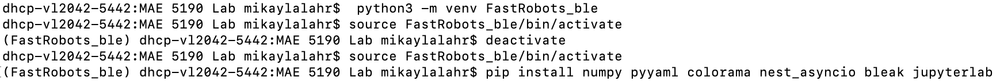
I also needed to install matplotlib to use for the 5000 level tasks. I asked a TA for help with
the installation. Below is a picture of the command entered into the CLI.
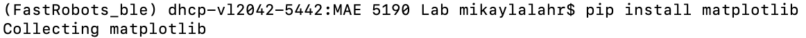
To import modules into the Jupyter Notebook the following lines of code were run.
After uploading the provided ble_ardunio.ino file to the Artemis board the MAC address was
printed in the serial monitor. The MAC address is c0:83:34:6a:b2:3c The image below shows
the Arduino serial monitor with the printed MAC address.
Prelab: Codebase
I installed the provided codebase into the project directory and copied the provided
ble_python directory into the project directory. Then the Jupyter Notebook was opened by
entering jupyter lab into the CLI (shown below).
To set up Bluetooth communication, the MAC address needed to be changed in the Jupyter
Notebook connection.yaml file to match the advertised MAC address from the Artemis board.
Then unique UUID addresses needed to be used in the connection.yaml file and Arduino IDE
because some devices in the lab may have the same MAC address. Using UUIDs ensures that
the computer is receiving data from the correct Artemis board. The UUIDs were generated in
the Jupyter Notebook demo.ipynb file and then entered into the connection.yaml and
ble_arduino.ino files. Below is a picture of the lines of code used in the demo.ipynb file
to generate the UUIDs.
The UUIDs were entered into the ble_arduino.ino file:
The UUIDs were entered into the connection.yaml file:
To connect to the Artemis the following lines were run in the Jupyter Notebook.
Several command types needed to be defined to complete the tasks outlined in the next section.
Added commands include ECHO, GET_TIME_MILLIS, GET_TIME_MILLIS_LOOP, SEND_TIME_DATA,
and GET_TEMP_READINGS.
Command types defined in Arduino IDE:
Command types defined in Jupyter Notebook:
Lab Tasks
Task 1: ECHO Command
The first task was to send an ECHO command of a string value to the Artemis board and
receive an augmented string on the host computer. This task tested the communication
between the Artemis board and the computer.
The image below shows the Arduino IDE code.
Jupyter Notebook code to send the ECHO command and receive the augmented string from
the Artemis board:
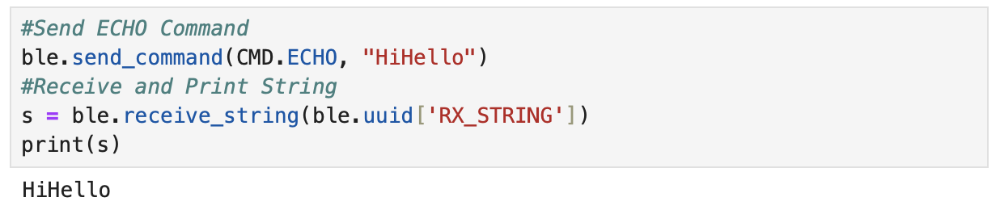
Task 2: GET_TIME_MILLIS
The next task adds another command to the Jupyter Notebook for the Artemis board to
reply with a string of the current time.
The image below shows the Arduino IDE code.
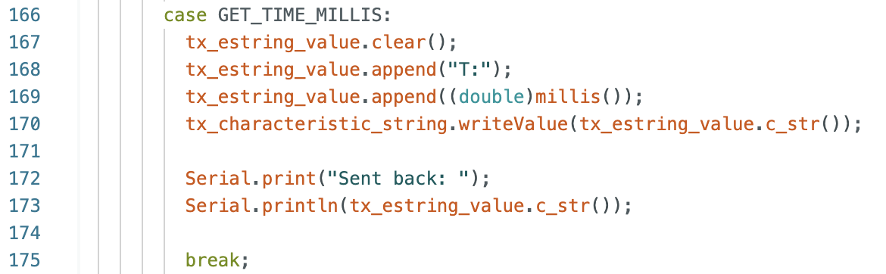
Jupyter Notebook code to send the GET_TIME_MILLIS command and receive the string
with the current time:
Task 3: Notification Handler
A notification handler was created in the Python Jupyter Notebook to receive a
string value from the Artemis board. The GET_TIME_MILLIS command was used to
get the time after starting the notification handler.
The image below is the notification handler and the GET_TIME_MILLIS command in
the Jupyter Notebook.
Task 4: Current Time Loop
A loop was implemented to get the current time in milliseconds from the Artemis
board and send the information to the computer. The time information is received
and processed by the notification handler.
To find the data transfer rate the length of the data was computed by assembling the
individual outputs into an array in the Jupyter Notebook. The number of strings in
each element of the array is 9, and the number of elements in the array is 748. The
time difference of the final (40.428s) and starting time (35.434s) was found to be
4.994 seconds. The data transfer rate is
(748*9)bytes/4.994seconds = 1348.018 bytes/second
The image below shows the Arduino IDE code for case GET_TIME_MILLIS_LOOP.
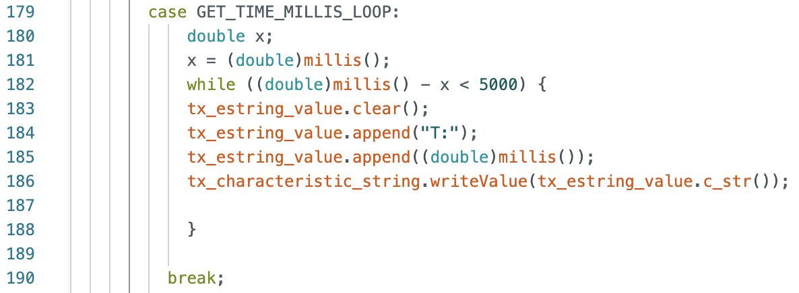
The image below shows the Jupyter Notebook command and some of the time outputs.
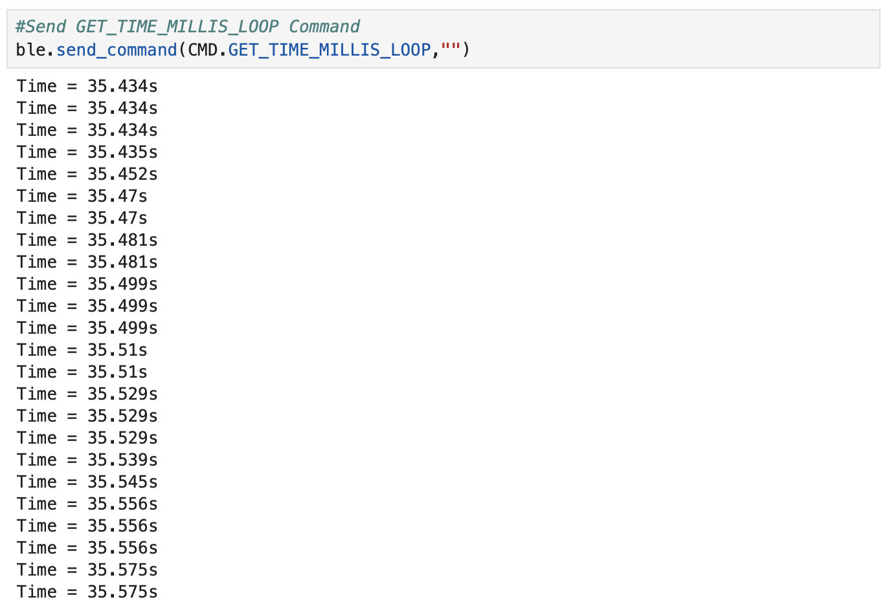
The following statements in Jupyter Notebook printed the timeSarray and the length
of the array that was used to compute the data transfer rate.
The video below shows all of the time outputs.
Task 5: SEND_TIME_DATA
A globally defined array to store time stamps was implemented. Inside of the for loop
each time stamp is put inside of the timearray. The data is then sent as an array
to the computer using Jupyter Notebook.
To find the data transfer rate the length of the data was computed by assembling the
individual outputs into an array in the Jupyter Notebook. The number of strings in
each element of the array is 9, and the number of elements in the array is 2748.
The time difference of the final (49.730s) and starting time (49.685s) was found to
be 0.045 seconds. The data transfer rate is
(2748*9)bytes/0.045seconds = 549600 bytes/second
The image below shows the Arduino IDE code.
The image below shows the Jupyter Notebook command and some of the time outputs
in the array.
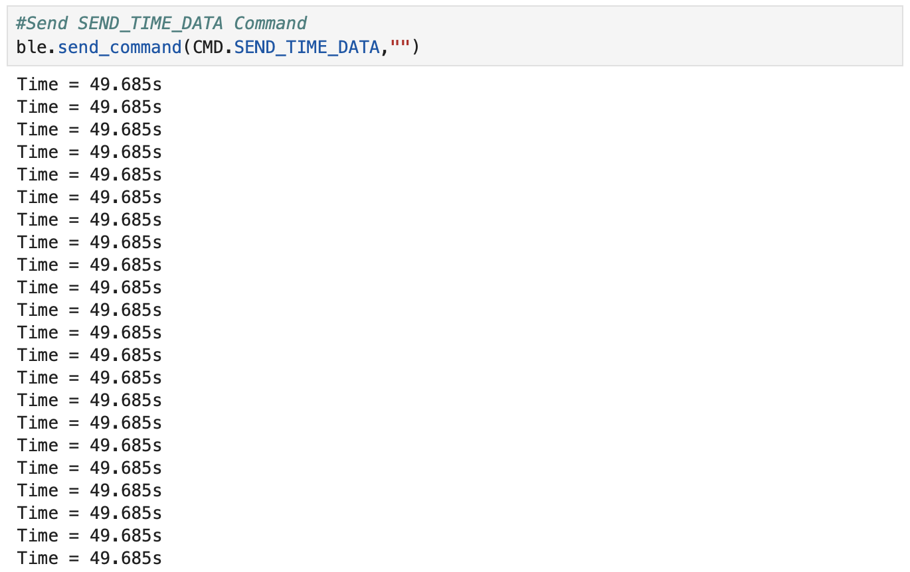
The following statements in Jupyter Notebook printed the timeSarray and the length
of the array that was used to compute the data transfer rate.
The video below shows all of the times in the array.
Task 6: GET_TEMP_READINGS
A second array was added to store temperature readings from the Artemis board. The
temperature array is the same size as the time array. The time and temperature
readings were taken at the same time. The data is sent as an array to the computer
using Jupyter Notebook.
The image below shows the Arduino IDE code.
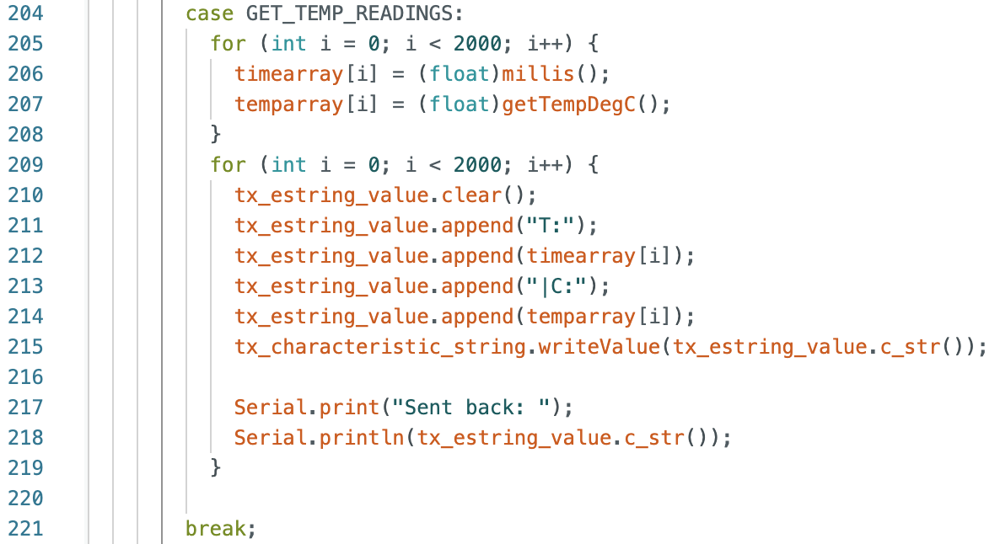
The image below shows the Jupyter Notebook command and some of the time and temperature
outputs in the array.
The video below shows all of the times and temperatures in the array.
Task 7: Discussion For Task 4 and Task 5
The method used in Task 4 involved sending the current time from the Artemis board to
the computer. Each time was sent as an individual piece of data. The method used in
Task 5 involved creating an array of times that was stored on the memory of the
Artemis board and then sent to the computer to display the collected data.
The data transfer rate of the array method used in Task 5 (549600 bytes/second) is
faster than the data transfer rate when sending individual pieces of data in Task 4
(1348.018 bytes/second).
An advantage of sending data individually as in Task 4 is that less memory on the
Artemis board is being used, but the disadvantage is a slower data transfer rate.
An advantage of sending data as an array as in Task 5 is that there is a faster data
transfer rate, but a disadvantage is that more memory is being used on the Artemis
to store the array.
The Artemis board has a maximum storage of 384 kB of RAM. If 16 bit values at 150 Hz
were sampled every 5 seconds, 256 values would be stored before running out of memory
on the Artemis board. The calculations can be found below.
5000 Level Task 1: Effective Data Rate And Overhead
I sent a message from the computer and received a reply from the Artemis board. The data
rate for 5, 10, 20, 30, 40, 50, 60, 70, 80, 90, 100, 110, and 120 bytes was tested. The
data rate for 5 bytes is 132.722 bytes/s and the data rate for 120 bytes is 2003.210
bytes/s. The plotted graph shows that as the number of bytes sent to the Artemis board
increases, the data rate increases. Below are pictures of the Jupyter Notebook code, the
graph, and the printed statements.
Additional graphs:
5000 Level Task 2: Reliability
I tested the reliability of sending data at a higher rate from the robot to the
computer. To determine the reliability of the data I ran the GET_TEMP_READINGS
command and compared the outputs printed in the Jupyter Notebook and the Arduino
IDE Serial Monitor.
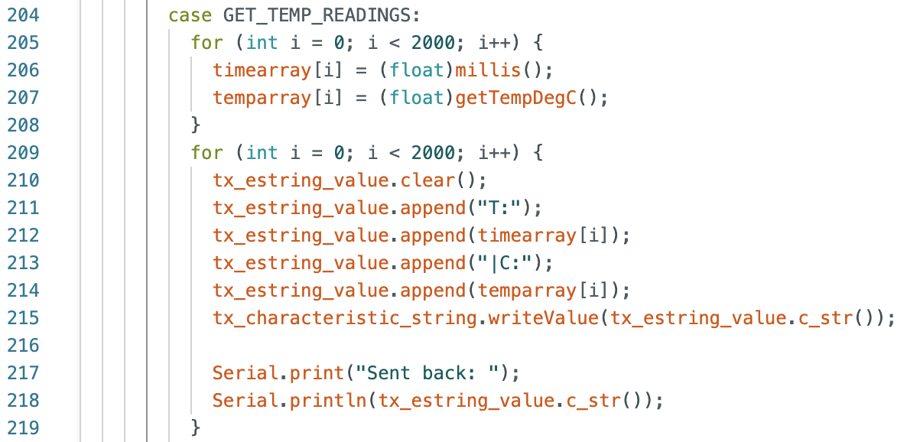
Outputs in the Jupyter Notebook (left) and the Arduino Serial Monitor (right):
After looking at the outputs, the time and temperature readings on the computer are
the same as the Artemis board and no data is missed. To confirm I copied and pasted
the data from each window into Matlab variables titled time1 and temp1 for the
Jupyter Notebook data, and time2 and temp2 for the Artemis data. I wrote a script to
compare the corresponding time and temperature data and record how many data points
are the same and how many are different. If there is a data point in the Jupyter
Notebook that does not correspond to the Artemis board, or vice versa, an error
message is displayed. The output variables in the workspace show that all data points
are the same. The reliability is 100%.
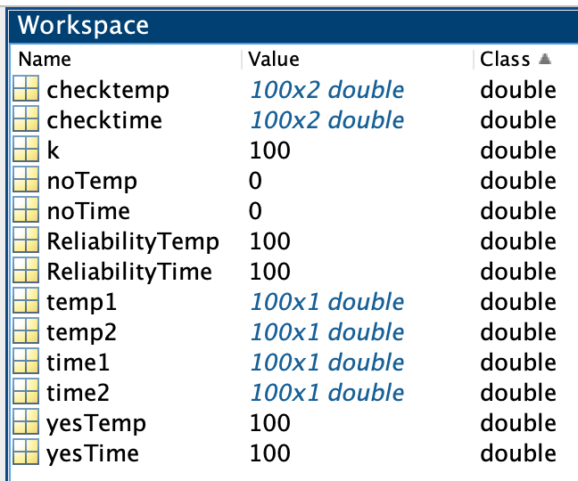
Discussion: Part 2
I learned how to use Bluetooth communication and UUIDs, between the Artemis board and
computer. I did not experience any significant problems connecting to Bluetooth.
Lab 1 References
Thank you to all of the TAs that answered my questions. I referenced the past lab reports of
Liam Kain, Rafael Gottlieb, Larry Lu, Julian Prieto, and Ignacio Romo.


.png)
.png)

.png)


 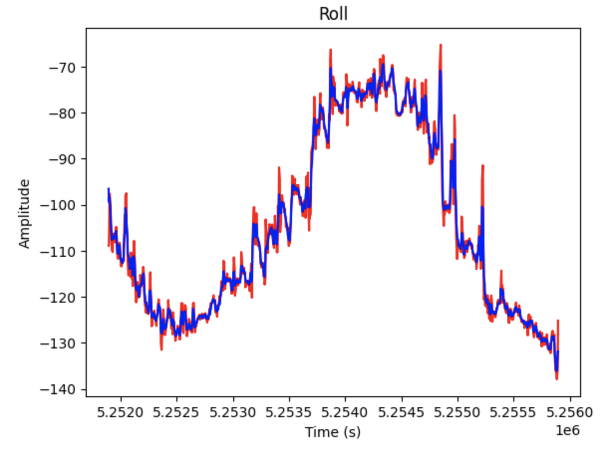
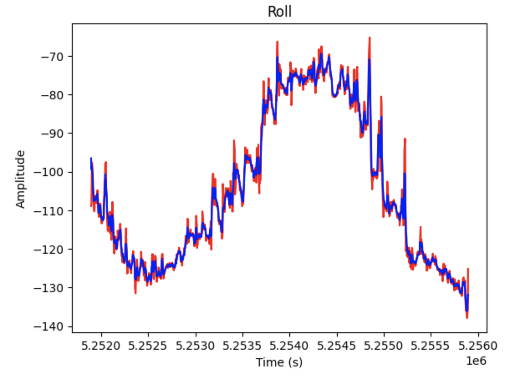


 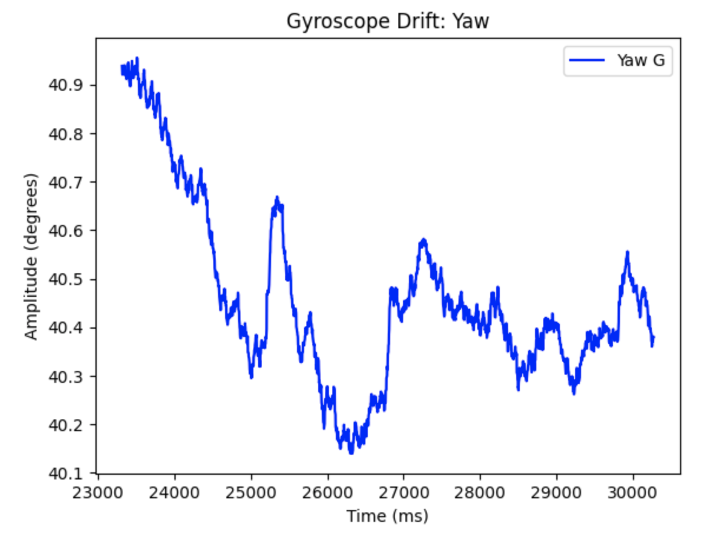
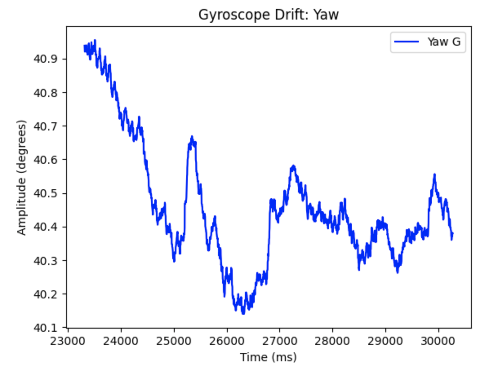


 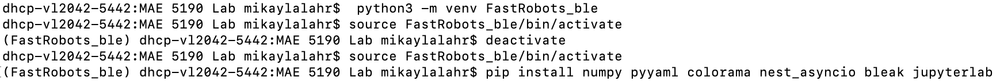
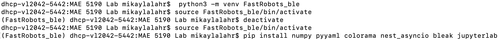


 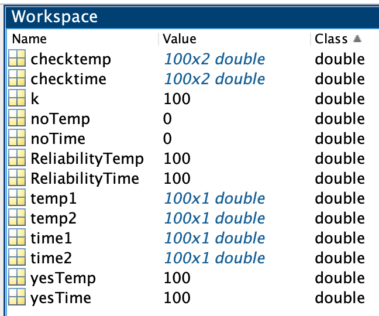
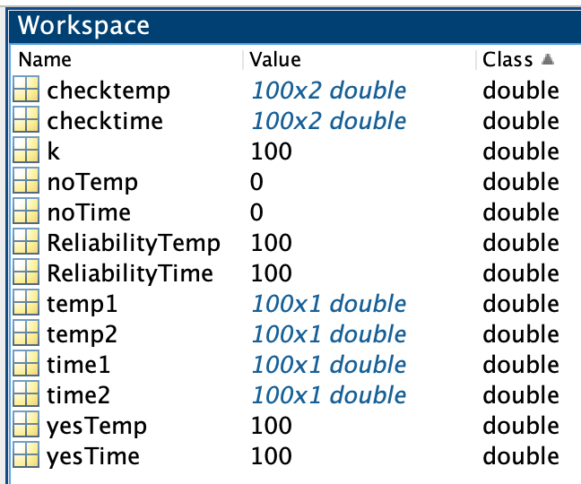